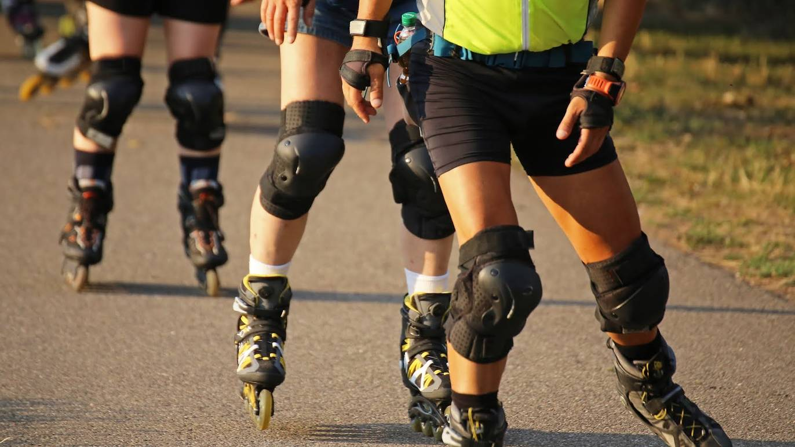

Bedok Reservoir Park
Located in the north of Bedok New Town, Bedok Reservoir Park is popular amongst joggers, water sports and land sports enthusiasts. A converted sand quarry, the park surrounds the 88-hectare Bedok Reservoir, making it a great place for both water and land activities.
Jump to Activities at Bedok Reservoir Park
But what exactly are you in for at Bedok Reservoir Park? Fret not, for this scenic location offers activities to both the young and the old.
Activities at Bedok Reservoir Park
Cycling & Inline Skating 
Cycling/inline skating is an activity that many visitors to Bedok Reservoir Park enjoy. Come with your own bicycle and skates and have fun in the park.
For more information on Cycling and Inline Skating, click here
Bird Watching
The highest point in Bedok Reservoir Park promises magnificent panoramic views of the reservoir. Bring along your camera to capture the rising sun and possibly a shot of a circling eagle. There are many shelters and benches where you can take a rest along the way up. You may also spot birds such as the Collared Kingfisher (Todiramphus chloris), White-throated Kingfisher (Halcyonsmyrnensis) and the White-breasted Waterhen (Amaurornis phoenicurus) at the Park.
For more information on Bird Watching, click here
Forest Adventure
For the more adventurous, you can opt for adrenaline-pumping activities at an aerial tree obstacle course about 100m down the trail. Imagine yourselves to be Tarzan and Jane among a myriad of obstacles 5m above ground, including four giant zip-lines which allow you to zip over the water surface and get up close with Mother Nature.
For more information on Forest Adventure, click here
Fishing
Fishing hobbyists can try their luck on the fishing deck. Anglers should take note to use only artificial bait to maintain the reservoir’s water quality and practise catch and release to maintain fish stock in the reservoir. Only carbon steel microbarb or barbless hooks should be used. For the safety of other visitors, please cast lines with care and dispose of all used hooks, lures and fishing lines properly.
For more information on Fishing, click here
Water Sports

If you enjoy water sports, water sports orientation courses as well as rentals for dragon boats and kayaks are available at the Park.
For more information on Water Sports, click here
How do you get here?
By Bus
5, 18, 21, 22, 28, 46, 59, 65, 67, 69, 168, 228
By MRT
Downtown Line to Bedok Reservoir Station (DT30)
For more information on how to get here